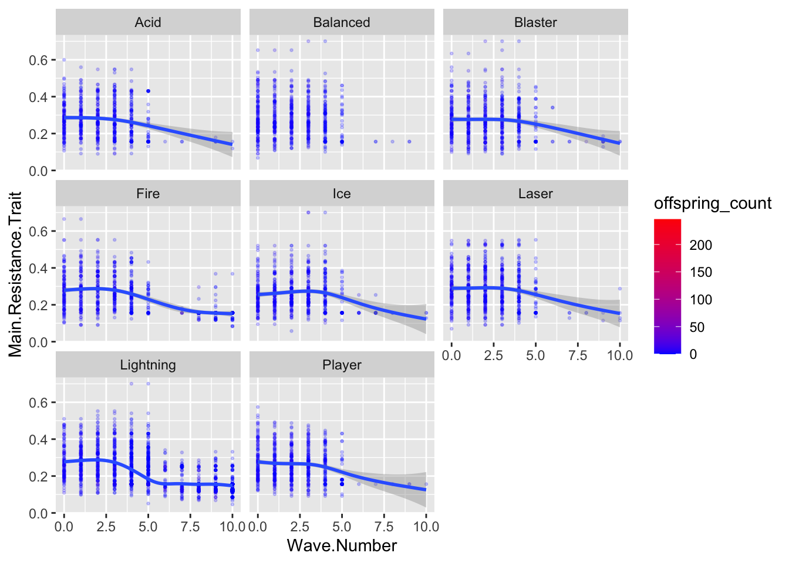
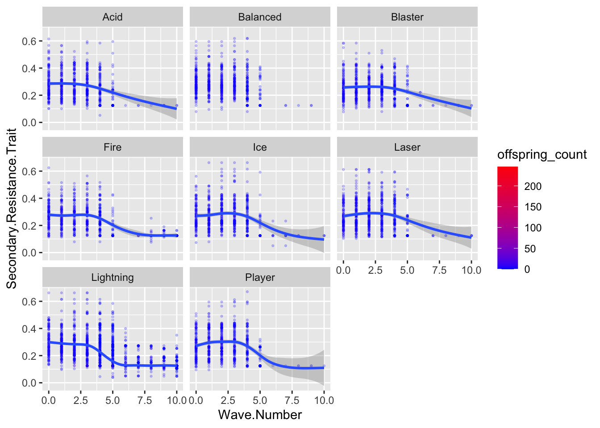
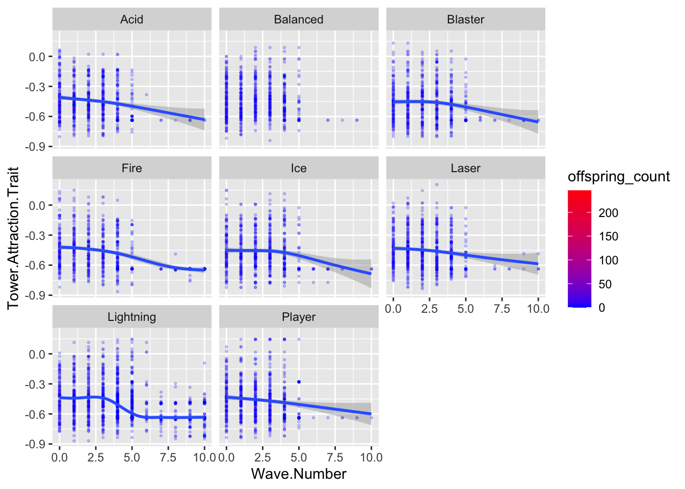

`geom_smooth()` using method = 'loess' and formula = 'y ~ x'`geom_smooth()` using method = 'loess' and formula = 'y ~ x'`geom_smooth()` using method = 'loess' and formula = 'y ~ x'`geom_smooth()` using method = 'loess' and formula = 'y ~ x'Of all the topics that represent public misconceptions about science, evolution is perhaps the most vexing to solve (though climate change is emerging as a new front runner in this dubious race). Acceptance of evolution is particularly low in the United States [19], and educators often face direct opposition to teaching evolution in their classrooms. The many opponents of evolution also intentionally spread demonstrably false information and have powerful lobbying capabilities.
Evolution is a concept that can be difficult to present in a formal learning setting but is very understandable when directly observed. Engaging games and simulations could therefore be particularly beneficial in helping to reach students and in correcting pervasive public misconceptions about the discipline.
Previous “evolutionary” games Game designers have long recognized the potential of evolution to SELL games [20]. Frustratingly, the most successful commercial games that emphasize evolution (for example, Spore™, Evolve™, and Pokemon™ Evolution) aren’t evolutionary at all. Most of these games insert player choice into the “evolutionary” process, allowing for example, the player’s character to choose whether to “evolve” a beak, or a lightning attack. This approach inadvertently represents intelligent design, a pseudoscientific reskinning of young earth creationism. These games, which use evolution as a marketing angle, potentially exacerbate the public’s confusion about evolution and reinforce existing misconceptions.
Intelligent Design: An Evolutionary Sandbox (available on Steam) is an evolutionary game in which players create species that are placed in an evolving ecosystem - once released, the creatures continue to evolve on their own. Niche (available on Steam) is a turn-based game in which the player breeds members of a species to avoid extinction. Although they have not been released commercially, the game NeuroEvolving Robotic Operatives (NERO) and a spin-off, EvoCommander, are also examples of games that incorporate evolution [23, 24, 25]. In Galactic Arms Race evolution is used to procedurally generate new weapons for the player [20], and evolutionary computation researchers have successfully tied the evolution of evolved fire patterns in Galactic Arms Race to the background music [26, 27].
Polymorphic Games is an interdisciplinary game studio on the UI campus. Polymorphic Games employs a unique development approach, in which undergraduates from a wide range of disciplines (including Computer Science, Virtual Technology and Design, Biology, English, Theater, Education, Business, and Music) collaborate to create video games that incorporate evolution as a core game mechanic. We were motivated to create Polymorphic Games by the idea that evolution makes a game better – more compelling and more fun – because the game adapts to the player. We argue that this approach represents a positive combination of STEM engagement and informal learning. Given a compelling game, players are inherently motivated to learn the underlying evolutionary concepts in order to succeed at the game objectives. Thus, the goal of Polymorphic Games is to make fun and compelling games, and to use established tools (e.g. in-game achievements, Easter eggs, challenges, and missions) to increase the games’ educational impact.
Polymorphic Games’ first project was Darwin’s Demons, a “space shooter” game inspired by Space Invaders. In Darwin’s Demons, the player battles an evolving population of aliens (Figure 1). The enemies’ traits are encoded by a digital genome of real numbers, and the fittest enemies reproduce to create the next generation causing the population to adapt to the player. The name of the game was inspired by the Darwinian Demon metaphor, which describes an organism that can evolve without constraint. In Darwin’s Demons, each trait can evolve independently (there are no evolutionary tradeoffs), meaning that eventually the player will lose. The objective (like in Space Invaders) is to beat the high score. Players can choose from a wide range of ships and secondary equipment, which increases player interest and serves to drive evolution along different trajectories [28]. Players can upgrade their equipment between generations of enemies, which are the evolutionary equivalent of waves in a typical video game. The up-grade screen includes data on the evolutionary trajectory of the game (Figure 2). The game saves the genome of every creature as a .csv file, allowing experimentation and in-depth analysis of the creatures’ evolution in response to player strategy. Development on Darwin’s Demons began in May 2016, and the game was released for sale on Valve’s Steam platform on February 13, 2017 (the Monday after Darwin Day). To our knowledge, Darwin’s Demons was the first commercially released game to fully feature evolving enemies.
Figure 1: Left: A screenshot from Polymorphic Game’s first commercial video game Darwin’s Demons, in which the player battles an evolving population of enemies. Right: The upgrade screen in Darwin’s Demons, which graphs the evolution of game traits.
Polymorphic Games’ second commercial release was Project Hastur, an evolutionary tower defense game. Project Hastur features fully realized 3D game environments and is the first implementation of our evolutionary procedural generation approach. All the game enemies are encoded by a digital genome, and mutations of this genome can produce a startling array of phenotypes. In Project Hastur, the player can play through a campaign that features 14 unique maps that unlock a series of defensive capabilities. The game features its own story, a wide variety of upgrade choices, and many fun “Easter Eggs” about evolution. In this game, our student developers created a method for evolutionary procedural generation of game enemies. All of the creatures in the game have the same architecture of their digital genomes (62 genes encoded by real numbers). These genomes are converted in the Unity Engine to different morphologies, behaviors, colors, and other game traits. This approach can produce a startling diversity of enemy types (Figure 2).
Project Hastur also features experiment mode, in which the evolutionary parameters can be altered. This feature has numerous benefits – it allows exploration of the system on which the game is built and allows the player to autonomously test “cause and effect” as they adjust parameters.
Figure 3: Experiment Mode in Project Hastur allows the user to manipulate a wide variety of game features, including the components of the evolutionary model. Importantly, users can deactivate the fitness functions, making the game “non-evolutionary”. This serves as an important control setting when testing the educational impact of our games.
The “gamification” of evolution can potentially help expose players to real evolutionary models in an engaging way. However, there are several tradeoffs between fun and realism that should be addressed when developing an evolutionary video game. In this paper, we discuss the lessons learned from developing and releasing games that feature evolution as a core mechanic, and the design decisions inherent to balancing fun gameplay with scientific realism.
Variation Inheritance Selection Time
Development: Project Hastur is a tower defense video game developed by students in the Polymorphic Games studio at the University of Idaho. The game features a campaign of 16 original game maps, as well as an experiment mode (described below) that allows the game to serve as a simulation model. Project Hastur was released on the Steam game site on Feb 12th, 2019. The unique feature of Project Hastur is that the enemies in the game model a finite population defined by digital genomes of quantitative traits.
Gameplay: In Project Hastur, the player must defend their base against waves of enemies called the Protean Swarm. The player defends their base by placing defensive towers in strategic locations, and the towers each have different capabilities, strengths, and weaknesses. In campaign mode, the player unlocks new game maps and defensive capabilities as they proceed through the story. Each map is defined by victory conditions that involve defeating a set number of enemy generations or building their defenses to specific criteria. Enemies appear in “waves”, a classic trope of tower defense games in which the developers script the number and type of enemies that appear over the course of the level. In Project Hastur, however, the enemy waves are part of a generational evolutionary model - each new enemy wave is comprised of the offspring of the most successful parents in the previous wave. In this way, we programmed Project Hastur to become an evolutionary tower defense game in which the enemy population adapts as the game proceeds.
The defensive capabilities of the player include four different categories of tower with qualitative differences in how they interact with the physics engine of the game. These include kinetic, ice, flame, and acid based towers, with each category including 4 different versions of upgrades. In addition, the player can access and upgrade two different abilities that are activated on demand with a cooldown - robotic minions and airstrikes.
Variation Inheritance Selection Time
Protean Traits: Each individual in the enemy population is defined by a digital genome of real numbers. There are 80 genes in the genome. Each Protean is diploid, such that its final trait value is calculated as the sum of the genetic values for the given locus on each chromosome. While all of these genes are used by the game engine to render a wide variety of visually distinct game enemies (see Figure x), some of the genes also affect Protean traits that are relevant to game play. These are the traits upon which the analyses in this paper were performed, and are defined in Table x.
Variation: When the game begins, Protean trait values are instantiated using the starting values in table x with some variation drawn from a Gaussian distribution. This creates the standing genetic variation in the population upon which selection will act. When offspring are created (described below), additional mutational variance is introduced. In campaign mode, the per locus mutation rate and effect size vary depending on the map’s degree of difficulty - more mutational variance causes the game to become much more difficult. In experiment mode, mutation rate and effect size are determined by the user. MUTATION RATE (u) is defined as the per locus probability that the genetic value of the locus will be changed by a number drawn from a Gaussian distribution with mean zero and standard deviation defined by the variable MUTATION EFFECT SIZE (e).
Inheritance: Each “wave” of Proteans in Project Hastur is actually a discrete generation of enemies created from the previous generation using a tournament selection algorithm. Proteans that are selected as parents (see Tournament Selection, below for the algorithm) each contribute one of their chromosomes, determined randomly, for each locus. Project Hastur uses a free recombination model (each locus acts as its own chromosome), but the game can specify a customized matrix of recombination frequencies among loci if the user desires. The chromosomes passed to the offspring are each passed to the mutation algorithm, and each locus has a chance (specified by u) to receive a mutation. Once the new offspring’s genome is instantiated, it is passed to the population for the next generation. Project Hastur records the unique ID numbers for each parent of every Protean. Proteans reproduce sexually, but are encoded as hermaphrodites.
On game maps that contain civilians, Proteans can also reproduce using an asexual model. In this case, if a Protean kills a civilian the Protean clones itself. This cloning process produces an offspring that is genetically identical to its parent during the gameplay phase itself (rather than waiting until the end of the wave). The number of clones produced by this process depends on the parent’s size (COLLIDER SURFACE AREA). Smaller Proteans produce more clones than larger Proteans.
Selection: Project Hastur specifies two fitness functions that determine the probability that Proteans will be selected to reproduce at the end of each generation. The first Fitness Function, called BASE FITNESS is related to the player’s base. This is a number that specifies the closest distance to the player base that was achieved by a given Protean. Should the Protean get right next to the base (a distance of zero), then BASE FITNESS includes the DAMAGE the Protean does to the base. Lower BASE FITNESS values increase the probability of reproduction when the wave ends. TOWER DAMAGE is the other fitness function used to calculate whether an individual will reproduce. In this case, the game sums the total DAMAGE done by the Protean to any defensive structure. TOTAL FITNESS is calculated by subtracting TOWER DAMAGE from BASE FITNESS.
Tournament Selection: At the end of each generation, we use tournament selection to identify individuals that will serve as parents. To do this, the game randomly selects a sample of Proteans from the previous generation. The number of individuals in this sample is a controllable parameter in experiment mode called TOURNAMENT SIZE. The individual with the best (lowest) value for TOTAL FITNESS is selected as a parent. A new tournament is then conducted to select the mate. Reproduction then occurs as described above and a single offspring is passed to the population for the next generation. This process is repeated until the population in the next generation has a number of individuals in it equal to POPULATION SIZE.
Time: Over the course of each wave (defined in terms of generations), the Proteans with the trait values that best enable them to navigate the map, damage player defenses, and reach the player base will accrue the best values for fitness. Each generation then, the most fit Proteans will have the most offspring, and the multivariate trait distribution of the population will change. This process of adaptation is what we hoped to encode into a tower defense game, and this paper represents our attempt to test the hypothesis that Project Hastur is an agent based model of quantitative trait evolution.
Standing Genetic Variation
Mutational Processes
Frequency and Effect Size: Example 1: Low frequency of mutation = “realistic”, High frequency = enough variation for evolution to use.
Example 2: Using mutational processes to scale difficulty (Darwin’s Demons)
Sexual vs asexual. Hermaphrodites? Encoding the digital genome (quantitative trait model vs discrete alleles)
Fitness functions Mechanisms of selection
Example: On vs off (adaptation vs drift)
`geom_smooth()` using method = 'loess' and formula = 'y ~ x'`geom_smooth()` using method = 'loess' and formula = 'y ~ x'`geom_smooth()` using method = 'loess' and formula = 'y ~ x'`geom_smooth()` using method = 'loess' and formula = 'y ~ x'traittemp<-all_the_data%>%
select(Generation, relfit, file, Evolution, Gun, Civilians, ScaleType0)%>%
group_by(Generation, file, Evolution, Gun, Civilians)%>%
mutate(scaleST0 = scale(ScaleType0, center = TRUE))%>%
mutate(scaleST02 = scaleST0*scaleST0)
Gradients <- traittemp %>%
group_by(Generation, file, Evolution, Gun, Civilians) %>%
do({
model <- lm(relfit ~ scaleST0 + scaleST02, data = .)
data.frame(
Beta = coefficients(model)[2],
PB = summary(model)$coef[2, 4]
)
})
Gradients <- Gradients %>%
mutate(sig = if_else(PB < 0.05 , "Y", "N"))
GunFit<- Gradients %>%
filter(Civilians == "OFF")
CivFit<- Gradients %>%
filter(Evolution == "OFF")
ggplot(GunFit, aes(x=Generation, y = Beta))+
geom_point(aes(color = sig))+
geom_smooth()+
scale_color_manual(values = c("lightgrey","red"))+
geom_hline(yintercept=0, linetype="dashed", color = "black")+
theme(legend.position = "none")+
facet_grid(Gun~Evolution)`geom_smooth()` using method = 'loess' and formula = 'y ~ x'ggplot(CivFit, aes(x=Generation, y = Beta))+
geom_point(aes(color = sig))+
geom_smooth()+
scale_color_manual(values = c("lightgrey","red"))+
geom_hline(yintercept=0, linetype="dashed", color = "black")+
theme(legend.position = "none")+
facet_grid(Gun~Civilians)`geom_smooth()` using method = 'loess' and formula = 'y ~ x'Hidden fitness functions
Example: Civilians and clonal reproduction.
ggplot(AutoCiv, aes(x=Generation, y= RunSpeed))+
geom_point(aes(x=Generation, y= RunSpeed, color = Acceleration),
size = 0.1, alpha = 0.1)+
geom_smooth()+
scale_color_gradient(low = muted("blue"),
high = "red",
space = "Lab",
na.value = "grey50",
guide = "colourbar",
aesthetics = "colour")+
facet_wrap(~replicate)`geom_smooth()` using method = 'gam' and formula = 'y ~ s(x, bs = "cs")'Population Size: Performance Vs. Drift
Example: Genetic Drift and Effective Population Size
Twin2<- read.csv("Twin/Gene_Write_File2.csv")
Twin1<- read.csv("Twin/geneWriteFile.csv")
ggplot(Twin2, aes(x=Wave.Number, y= Player.Distance.Fitness))+
geom_point(aes(x=Wave.Number, y= Player.Distance.Fitness, color = Player.Distance.Fitness),
size=0.5, alpha = 0.5)+
geom_smooth()+
scale_color_gradient(low = muted("blue"),
high = "red",
space = "Lab",
na.value = "grey50",
guide = "colourbar",
aesthetics = "colour")`geom_smooth()` using method = 'gam' and formula = 'y ~ s(x, bs = "cs")'ggplot(Twin2, aes(x=Wave.Number, y= Tower.Attraction.Trait))+
geom_point(aes(x=Wave.Number, y= Tower.Attraction.Trait, color = Main.Resistance.Trait),
size=0.5, alpha = 0.5)+
geom_smooth()+
scale_color_gradient(low = muted("blue"),
high = "red",
space = "Lab",
na.value = "grey50",
guide = "colourbar",
aesthetics = "colour")`geom_smooth()` using method = 'gam' and formula = 'y ~ s(x, bs = "cs")'
ggplot(Twin2, aes(x=Wave.Number, y= Main.Resistance.Trait))+
geom_point(aes(x=Wave.Number, y= Main.Resistance.Trait, color = Main.Type),
size=0.5, alpha = 0.5)+
geom_smooth()+
facet_wrap(~Main.Type)`geom_smooth()` using method = 'gam' and formula = 'y ~ s(x, bs = "cs")'
Twin2Lightning <- Twin2 %>%
filter(Main.Type == "Lightning" | Secondary.Type == "Lightning")
ggplot(Twin2Lightning, aes(x=Wave.Number, y= Tower.Attraction.Trait))+
geom_point(aes(x=Wave.Number, y= Tower.Attraction.Trait),
size=0.5, alpha = 0.5)+
geom_smooth()`geom_smooth()` using method = 'gam' and formula = 'y ~ s(x, bs = "cs")'
Generational model = waves
Continuous model